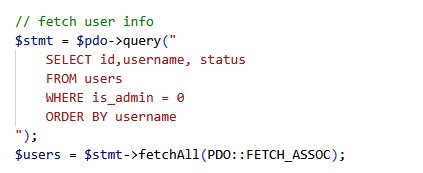
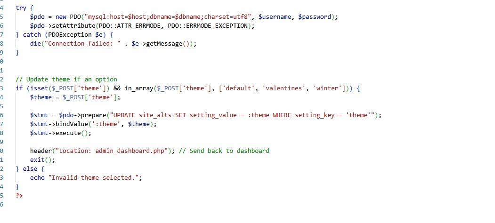
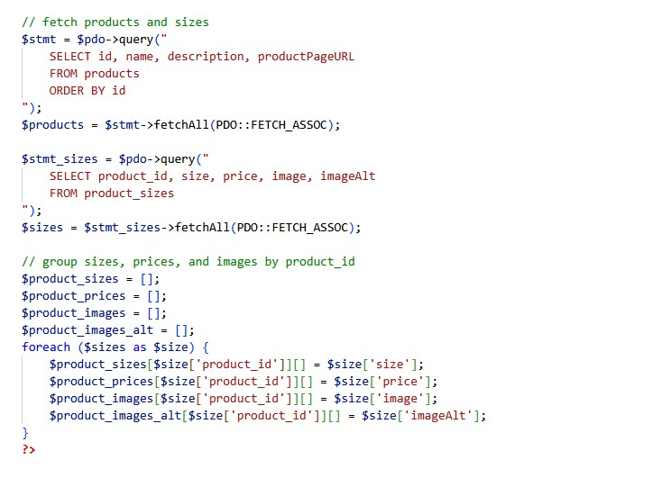
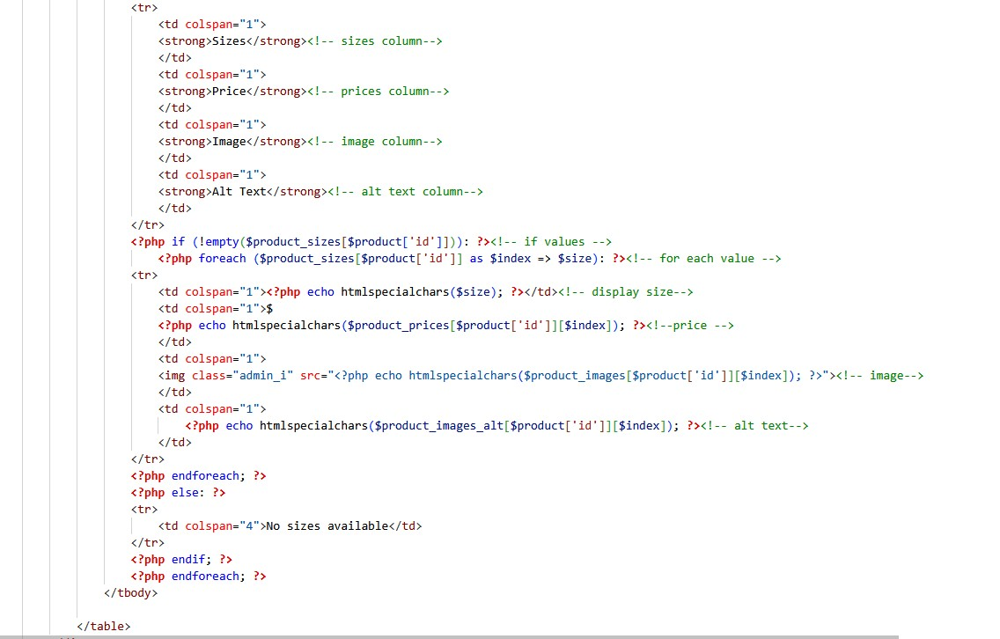
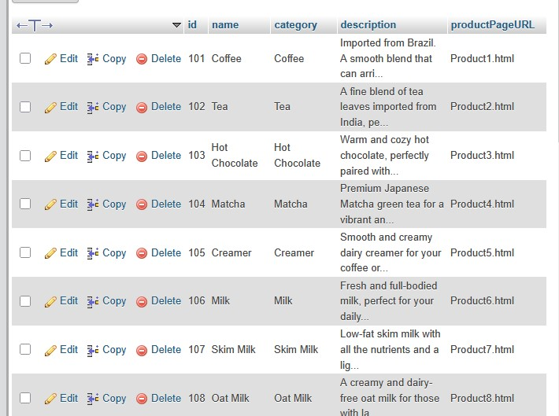
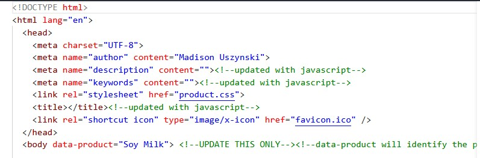
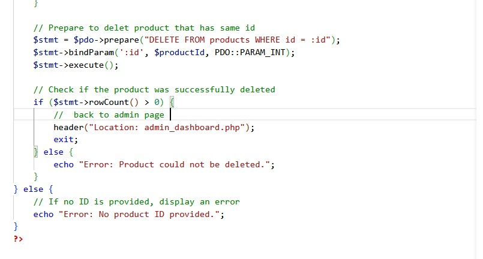

Non admin users are provided from the database
The form supplys a checkbox which will collect user id for the update_users.php
The users are displayed on the Admin page with their current Status
allowing admins to see if the acivity has changed
User is then selected via checkbox and the status is toggled with the option values,
then submitted to update_user.php
update_user.php validates the form submission, finds user of selection, and determines the action
based on the definition
users are then entered as id, and status is set to the one selected
Admin is sent back to dashboard is sucessful
In the same way as user update, post request is send when a theme is selected and sent to another php file for execution
User is checked to be admin
database table of site_alts is updated via the setting_value row for themes
the key which is the name of the theme is altered
The update_theme.php grabs the newley updated theme and returns it as json
which is then acessed via the nav.js and applied to each page
information is cached in localstorage to speed up load time
products and sizes are grouped
Products are looped thru and displayed
a buttom to edit or delete is provided
Info from the product_sizes db table is displayed here
When edit button is clicked, a table of all product inforamtion is displayed and allowed to be edited
parts such as url and catagory are readonly
url for image is only a url, and image file MUST be placed in the image folder for response.
Once submitted, the database will reflect the changes
the final step in dynaically updating product page is to adjust the data-product tag in the body element, which will trigger the javascript to fill out the product information
The delete button selects the product based on id, as the product_sizes table reflects changes made on the product table, deleting by the product table id will cause both to clear
